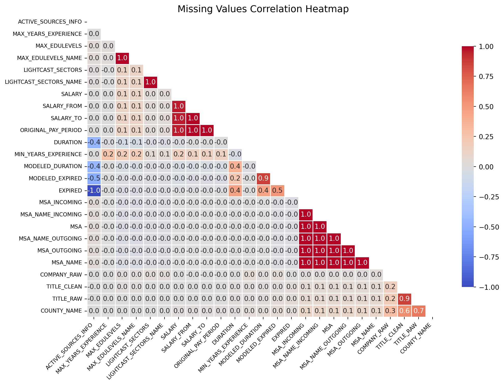
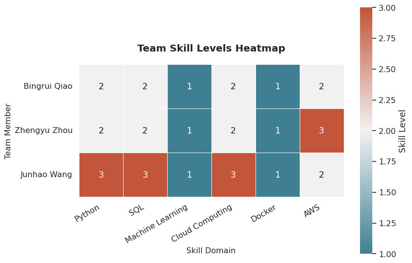

import os, datetime
os.makedirs("logs", exist_ok=True)
with open("logs/_ping.txt", "w", encoding="utf-8") as f:
f.write("hello @ " + str(datetime.datetime.now()) + "\n")
print("WROTE: logs/_ping.txt")Geographic and Remote Work Analysis: Job Market 2024
Final Report
x
1 Introduction
1.1 Research Rationale
Our team chose Geographic and Remote Work Analysis as our research topic. Since the outbreak of the pandemic, the rise of remote work, along with the continuous emergence of opportunities related to artificial intelligence, has changed the way job seekers evaluate career choices. At the same time, cities like Austin, Denver and Raleigh-Durham are leveraging flexible work policies and lower living costs to attract new talent.
1.2 Why is this topic important?
In today’s AI-dominated landscape, geographic location and skill sets have become pivotal factors in employment opportunities. As AI-driven technologies continue to enhance productivity, understanding the following aspects is critical: comparative job growth between AI and traditional sectors, hiring dynamics in major tech hubs such as Silicon Valley, Boston, and Austin, the urban-rural divide in AI versus non-AI career opportunities, and the transformation of remote work paradigms.
1.3 Trend Analysis
This section examines geographic and remote work dynamics in the 2024–2025 U.S. labor market.
AI-related jobs are highly concentrated in tech and policy hubs. Washington, D.C. leads with 4.4% of postings requiring AI skills, followed by Washington State and Delaware. At the city level, New York, Seattle, and San Jose dominate in absolute AI job postings, while D.C. has the highest proportion. Nationally, postings mentioning AI skills rose 20% year-over-year in 2024, with generative AI skills nearly quadrupling (Lightcast and Stanford HAI (2025), 1–17). In contrast, non-AI job growth is broad-based: 33 states reported employment gains in 2024, led by Rochester, MN (+6.5%) and Stockton–Lodi, CA (+5.3%), driven by healthcare and logistics (U.S. Bureau of Labor Statistics (2023), 1–2).
Remote work has stabilized at a “new normal.” Although job postings labeled remote declined from >10% in 2022 to ~7.5% in May 2025 (Indeed Hiring Lab (2024)), telework rates remain far above pre-pandemic levels, with ~20% of workers telecommuting in 2024 (U.S. Bureau of Labor Statistics (2024), 12). By industry, remote adoption is highest in IT, finance, and management (Makridis (2024), 16; Bick, Blandin, and Mertens (2024), 7)), while healthcare, retail, and manufacturing remain predominantly on-site. Employers are shifting toward hybrid models, often requiring more in-office presence, though remote-capable roles continue to play a significant role (Barrero, Bloom, and Davis (2023), 20–21).
Traditional tech hubs like Silicon Valley and New York City remain dominant in high-skill hiring, with over 65% of AI engineers located in these regions as of 2024. Despite rising costs and the expansion of remote work, their strong innovation ecosystems and dense talent networks preserve their competitive edge. At the same time, geographic diversification is accelerating: Miami and San Diego are emerging as fast-growing hubs, driven by lifestyle appeal, lower living costs, and, in Miami’s case, favorable tax policies. Miami saw a 12% increase in AI roles, while San Diego experienced a 7% rise in Big Tech hiring and raised $5.7 billion in venture capital. Conversely, former growth leaders like Austin and Houston are losing momentum, with startup employment declining by 6% and 10.9%, respectively, due to infrastructure gaps, cultural mismatch, and a shift back toward hybrid work models (SignalFire (2025)).
Generative AI introduces a reversal in the geography of job market exposure compared to earlier automation technologies. Whereas prior waves of automation—such as robotics and enterprise software—primarily disrupted rural and small-town economies by replacing routine manual or physical labor, generative AI disproportionately affects urban, high-skill, white-collar labor markets. These urban centers, including San Jose, San Francisco, New York, and Washington D.C., are home to occupations rich in cognitive, nonroutine tasks such as coding, writing, and data analysis—tasks highly susceptible to AI augmentation or displacement(Muro, Methkupally, and Kinder (2025)).
As a result, AI exposure rates in urban counties often exceed 40%, while rural counties average closer to 30%, reflecting both differing occupational structures and varying access to information-oriented industries. While rural areas may be more insulated from AI disruption, they are also less likely to benefit from AI-driven productivity gains. This spatial shift in exposure demands new policy attention focused on urban workforce reskilling, while also ensuring rural communities are not left behind in the emerging AI economy(Muro, Methkupally, and Kinder (2025)).
1.4 What do you expect to find in your analysis?
Our research encompasses various aspects of geographic distribution and remote work trends. Specifically, we aim to investigate: Job growth patterns across different cities and states, including a comparative analysis of which metropolitan areas demonstrate the highest expansion rates for both AI-related and non-AI career opportunities. The evolution of remote work arrangements, examining whether remote positions are experiencing growth or decline and how this shift affects workforce distribution. Comprehensive analysis of tech hub dynamics, identifying whether traditional technology centers like Silicon Valley, Austin, and Boston continue to dominate the hiring landscape, or if emerging locations are gaining competitive advantages. The urban-rural divide in employment opportunities, investigating how job market conditions differ between metropolitan and rural areas for both AI and traditional professional roles, and what this means for workforce mobility and regional economic development.
1.5 # Data Cleaning & Preprocessing
title: “Data Cleaning” subtitle: “Comprehensive Data Cleaning” author: - name: “Bingrui Qiao” - name: “Zhengyu Zhou” - name: “Junhao Wang” affiliations: “Boston University” bibliography: references.bib csl: csl/econometrica.csl format: html: toc: true number-sections: true execute: echo: true eval: true freeze: false error: false cache: false enabled: !expr (os.getenv(“CI”, “false”) != “true”) jupyter: python3 —
1.6 Data Cleaning & Preprocessing
In this section, we clean the Lightcast dataset, log each step, and save a reproducible cleaned CSV for downstream EDA.
1.6.1 Setup & Load (clean version)
import os, datetime
import numpy as np
import pandas as pd
import matplotlib.pyplot as plt
import missingno as msno
import subprocess
import seaborn as sns
# Handle missingno (optional)
try:
import missingno as msno
HAS_MSNO = True
except ImportError:
HAS_MSNO = False
# Paths
DATA_PATH = "data/lightcast_job_postings.csv"
CLEAN_PATH = "data/cleaned_lightcast.csv"
LOG_PATH = "logs/cleaning_log.txt"
FIG_MISS = "figures/missing_values_heatmap.png"
# Ensure output dirs exist
os.makedirs("logs", exist_ok=True)
os.makedirs("figures", exist_ok=True)
# Logger
def log(msg: str):
print(msg)
with open(LOG_PATH, "a", encoding="utf-8") as f:
f.write(msg.rstrip() + "\n")
# Start a fresh log
with open(LOG_PATH, "w", encoding="utf-8") as f:
f.write("=== DATA CLEANING LOG START ===\n")
# Ping file (to confirm write permission)
with open("logs/_ping.txt", "w", encoding="utf-8") as f:
f.write("hello from python @ " + str(datetime.datetime.now()) + "\n")
# AUTO-DOWNLOAD IF MISSING
if not os.path.exists(DATA_PATH):
gdrive_url = "https://drive.google.com/uc?id=1V2GCHGt2dkFGqVBeoUFckU4IhUgk4ocQ"
try:
import gdown
gdown.download(gdrive_url, DATA_PATH, quiet=False)
except Exception as e:
raise FileNotFoundError(f"Could not download dataset.\nError: {e}")
# Load data
if not os.path.exists(DATA_PATH):
raise FileNotFoundError(f"Dataset not found at {DATA_PATH}. Check path & working dir.")
df = pd.read_csv(DATA_PATH, low_memory=False, on_bad_lines="skip")
log(f"Loaded dataset → rows: {len(df):,}, cols: {df.shape[1]}")1.6.2 Drop redundant/irrelevant columns
columns_to_drop = [
"ID","URL","ACTIVE_URLS","DUPLICATES","LAST_UPDATED_TIMESTAMP",
"NAICS2","NAICS3","NAICS4","NAICS5","NAICS6",
"SOC_2","SOC_3","SOC_5"
]
before_cols = df.shape[1]
df.drop(columns=columns_to_drop, inplace=True, errors="ignore")
after_cols = df.shape[1]
log(f"Dropped {before_cols - after_cols} columns; remaining columns: {after_cols}")
# Normalize names & basic types
df.columns = df.columns.str.strip().str.upper()
if "POSTED" in df.columns:
df["POSTED"] = pd.to_datetime(df["POSTED"], errors="coerce")
if "SALARY" in df.columns:
df["SALARY"] = pd.to_numeric(
df["SALARY"].astype(str).str.replace(r"[^0-9.-]", "", regex=True),
errors="coerce"
)1.6.3 Visualize & handle missing values
# --- Missing values correlation heatmap (like your classmate) ---
cols_with_na = [c for c in df.columns if df[c].isna().any()]
sub = df[cols_with_na]
if len(cols_with_na) >= 2:
if len(cols_with_na) > 25:
top_na_cols = sub.isna().mean().sort_values(ascending=False).head(25).index
sub = sub[top_na_cols]
na_corr = sub.isna().astype(int).corr()
mask = np.triu(np.ones_like(na_corr, dtype=bool))
plt.figure(figsize=(11, 8))
sns.heatmap(
na_corr, mask=mask, cmap="coolwarm", vmin=-1, vmax=1,
annot=True, fmt=".1f", linewidths=.5,
cbar_kws={"shrink": .8}
)
plt.title("Missing Values Correlation Heatmap", fontsize=14)
plt.xticks(rotation=45, ha="right", fontsize=8)
plt.yticks(rotation=0, fontsize=8)
plt.tight_layout()
FIG_MISS = "figures/missing_values_corr_heatmap.png"
plt.savefig(FIG_MISS, dpi=150)
plt.show()
else:
log("No columns with missing values; skipping heatmap.")
1.6.4 Remove duplicates
subset_cols = [c for c in ["TITLE","COMPANY","LOCATION","POSTED"] if c in df.columns]
before = len(df)
if subset_cols:
df.drop_duplicates(subset=subset_cols, keep="first", inplace=True)
after = len(df)
log(f"Removed duplicates by {subset_cols}: {before - after} rows dropped; remaining: {after}")1.6.5 Optional salary sanity filter
if "SALARY" in df.columns:
bad = (df["SALARY"] < 1) | (df["SALARY"] > 1_000_000)
n_bad = int(bad.sum())
if n_bad > 0:
df.loc[bad, "SALARY"] = np.nan
med2 = df["SALARY"].median()
df["SALARY"].fillna(med2, inplace=True)
log(f"Clipped extreme Salary ({n_bad} rows) and refilled with median {med2:.2f}")1.6.6 Save & summary
df.to_csv(CLEAN_PATH, index=False)
log(f"Saved cleaned dataset → {CLEAN_PATH}")
summary = f"Rows: {len(df):,}\nColumns: {df.shape[1]}\nSample columns: {list(df.columns)[:12]}"
print(summary)
log("✅ Cleaning pipeline finished successfully.")2 Skill Gap Analysis
5 Visualizing Skill Gaps

6 Compare skill
References
Barrero, J. M., N. Bloom, and S. J. Davis. (2023): Why Working from Home Will Stick: Productivity Effects of Remote and Hybrid Work,Stanford University, 20–21.
Bick, A., A. Blandin, and K. Mertens. (2024): Remote Feasibility Explains Persistent Gaps Across Sectors,Stanford Institute for Economic Policy Research (SIEPR), 7.
Indeed Hiring Lab. (2024): November 2024 u.s. Labor Market Update (Remote Work),.
Lightcast, and Stanford HAI. (2025): Artificial Intelligence Index Report 2025,Stanford University, 11–17.
Makridis, C. A. (2024): Remote Work Trends and Employee Engagement Across Industries, NBER Working Paper, National Bureau of Economic Research, 16.
Muro, M., S. Methkupally, and M. Kinder. (2025): “The geography of generative AI’s workforce impacts will likely differ from those of previous technologies,” Brookings,.
SignalFire. (2025): “The SignalFire State of Tech Talent Report - 2025,”
U.S. Bureau of Labor Statistics. (2023): Business Response Survey to the Coronavirus Pandemic, 2023,U.S. Department of Labor, 1–2.
---. (2024): Remote Work, Wages, and Hours, Working Paper, U.S. Bureau of Labor Statistics, 12.